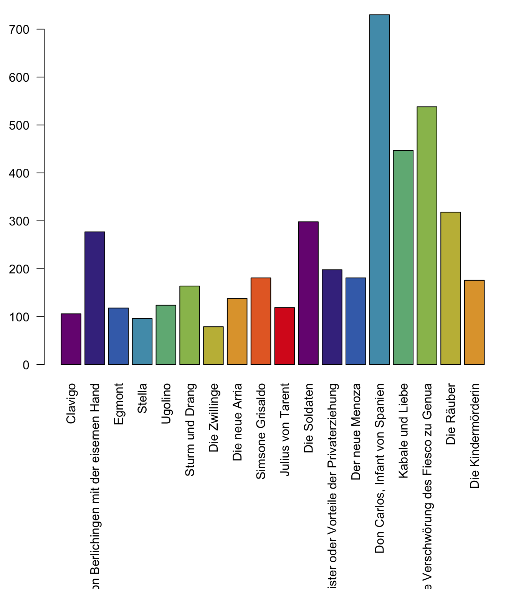
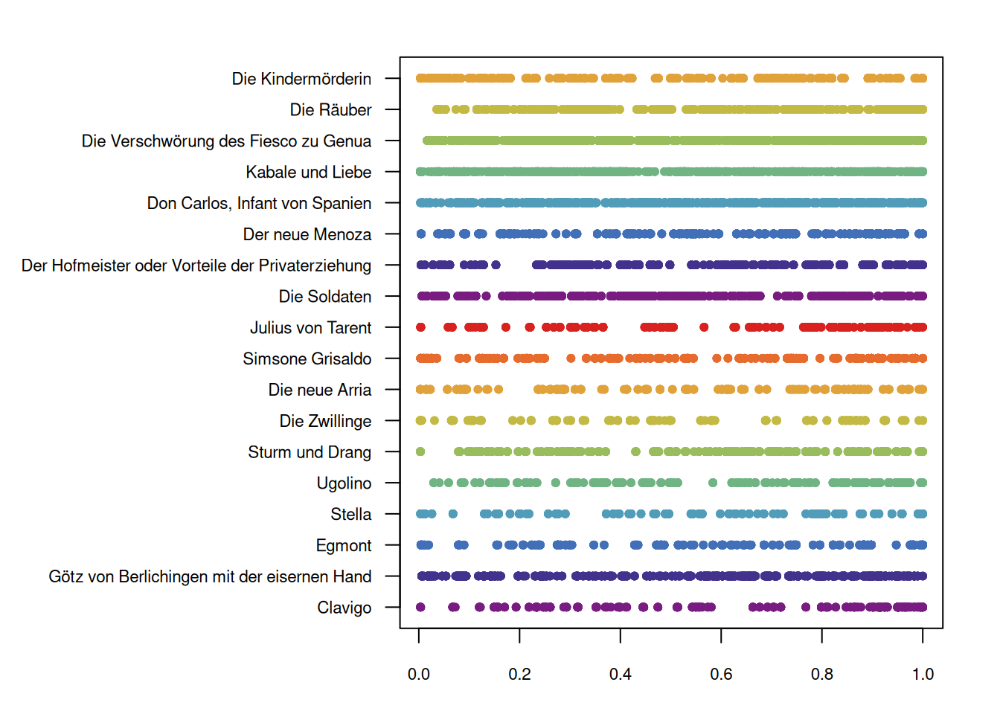
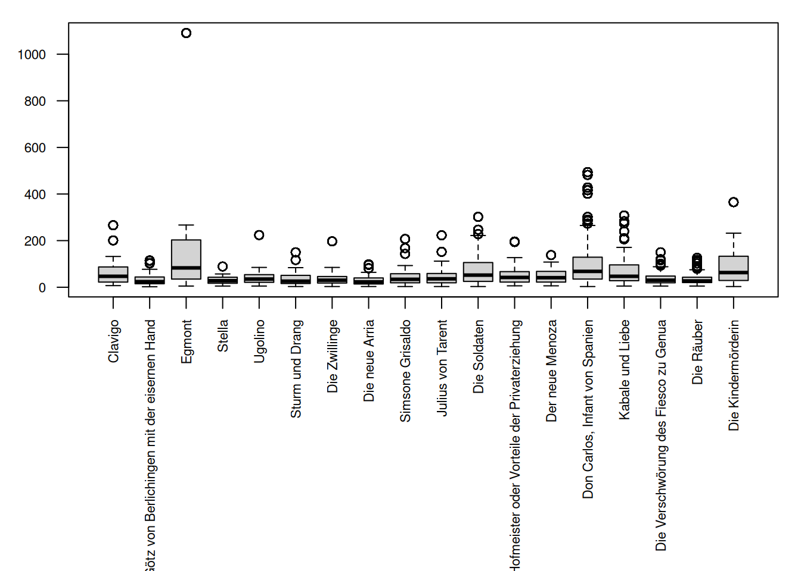

10 Stage Directions
So far, we have analysed the character speech of the plays, and/or the structural information (acts and scenes). We will now turn to stage directions, using the collection of Sturm und Drang plays again. Dealing with stage directions is new in 3.0 of the package and thus not as polished as the other parts.
sturm_und_drang.ids <- c("qd:11f81.0", "qd:11g1d.0", "qd:11g9w.0",
"qd:11hdv.0", "qd:nds0.0", "qd:r12k.0",
"qd:r12v.0", "qd:r134.0", "qd:r13g.0",
"qd:rfxf.0", "qd:rhtz.0", "qd:rhzq.0",
"qd:rj22.0", "qd:tx4z.0", "qd:tz39.0",
"qd:tzgk.0", "qd:v0fv.0", "qd:wznj.0",
"qd:tx4z.0", "qd:rfxf.0")
sturm_und_drang.plays <- loadDrama(sturm_und_drang.ids)First of all, we check the overall number, which already reveals large differences.
sd <- sturm_und_drang.plays$stageDirections[,
.(l=length(unique(utteranceBegin))),
.(corpus,drama)]
par(mar=c(15,3,1,1))
barplot(sd$l,
names.arg = dramaNames(sturm_und_drang.plays, formatString = "%T"),
las=2,
col=qd.colors)
Next, we will turn to the temporal distribution of stage directions over the plays. Since the plays have different lengths, we will need to normalize the position of the stage directions, so that they are given in percentage values.
The table that contains the stage directions (sturm_und_drang.plays$stageDirections) also contains a column called utteranceBegin. They are not strictly utterances, but the column name is the same as in other tables so that it’s easier to re-use code. We will use this column to visualize the temporal distribution of the stage directions. To normalize the temporal distribution, we first add a new column that gives us the maximal value. In the second step, we divide by this value.
sturm_und_drang.plays$stageDirections[,m:=max(utteranceBegin),.(corpus,drama)]## Warning in `[.data.table`(sturm_und_drang.plays$stageDirections, ,
## `:=`(m, : Invalid .internal.selfref detected and fixed by taking a
## (shallow) copy of the data.table so that := can add this new column by
## reference. At an earlier point, this data.table has been copied by R (or
## was created manually using structure() or similar). Avoid names<- and
## attr<- which in R currently (and oddly) may copy the whole data.table. Use
## set* syntax instead to avoid copying: ?set, ?setnames and ?setattr. If this
## message doesn't help, please report your use case to the data.table issue
## tracker so the root cause can be fixed or this message improved.par(mar=c(3,14,2,2))
stripchart(utteranceBegin/m ~ drama,
data = sturm_und_drang.plays$stageDirections,
las = 1,
pch=20,
col=qd.colors,
cex.axis=0.7,
group.names = dramaNames(sturm_und_drang.plays, formatString = "%T"))
This plot shows each stage direction at its relative position in the play. There is no clear pattern to discern here, except that they are not equally distributed in the plays (but we already knew that, see above).
Of course, we can also look at the length of stage directions, and their variances. This is very similar to what we did for character utterances. Please note that the length here is measured in character numbers. A single word direction like smiles has a length of 6 characters.
par(mar=c(12,3,1,1))
boxplot(utteranceEnd - utteranceBegin ~ drama,
data=sturm_und_drang.plays$stageDirections,
las=2,cex.axis=0.7,
names=dramaNames(sturm_und_drang.plays, formatString = "%T"),
xlab=NULL, ylab=NULL)